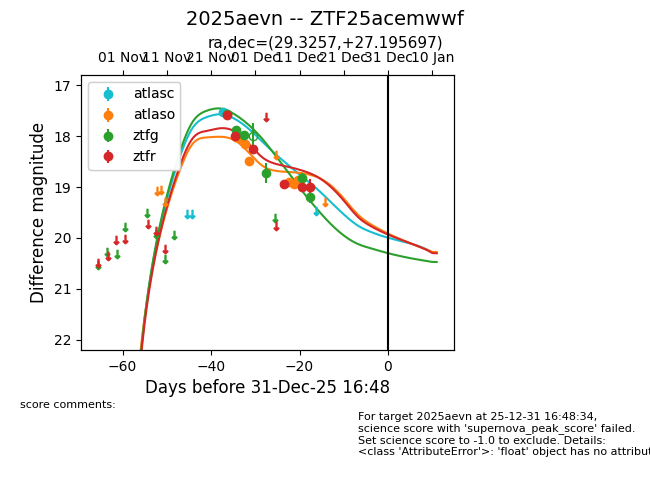
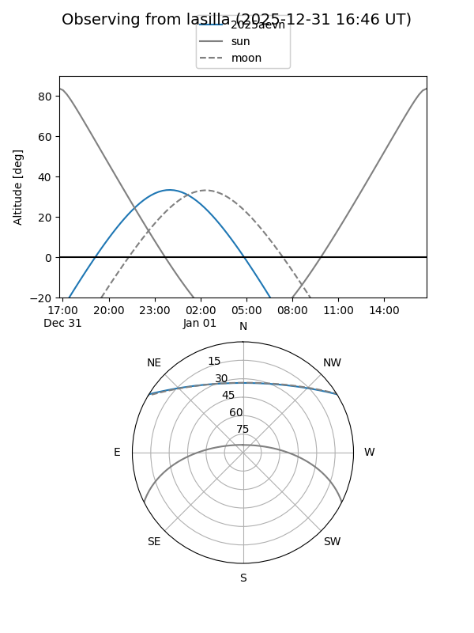
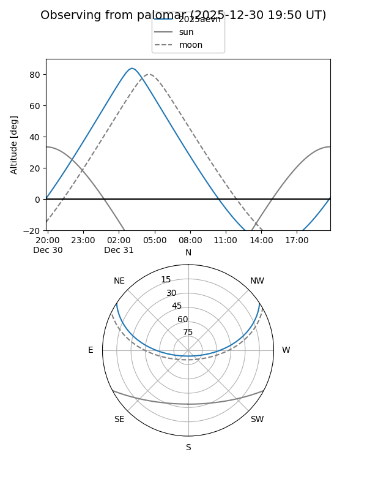
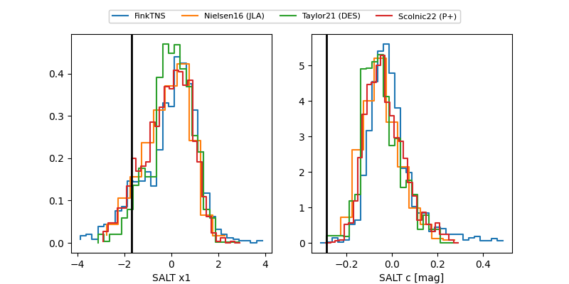

2025aevn
Target 2025aevn at 2025-12-31 16:59
Aliases and brokers:
FINK:
Lasair:
ALeRCE:
TNS:
YSE:
alt names
ZTF25acemwwf (ztf,fink_ztf)
2025aevn (tns,yse)
Coordinates:
equatorial (ra, dec) = 29.3257,+27.19570
equatorial (HMS+DMS) = 01:57:18.18,+27:11:44.51
galactic (l, b) = (140.5127,-33.41750)
Flags:
Photometry:
last atlasc=17.52, atlaso=18.86, ztfg=19.20, ztfr=18.99
1 atlasc, 7 atlaso, 6 ztfg, 6 ztfr detections
Lightcurve

Visibility


Additional plots
